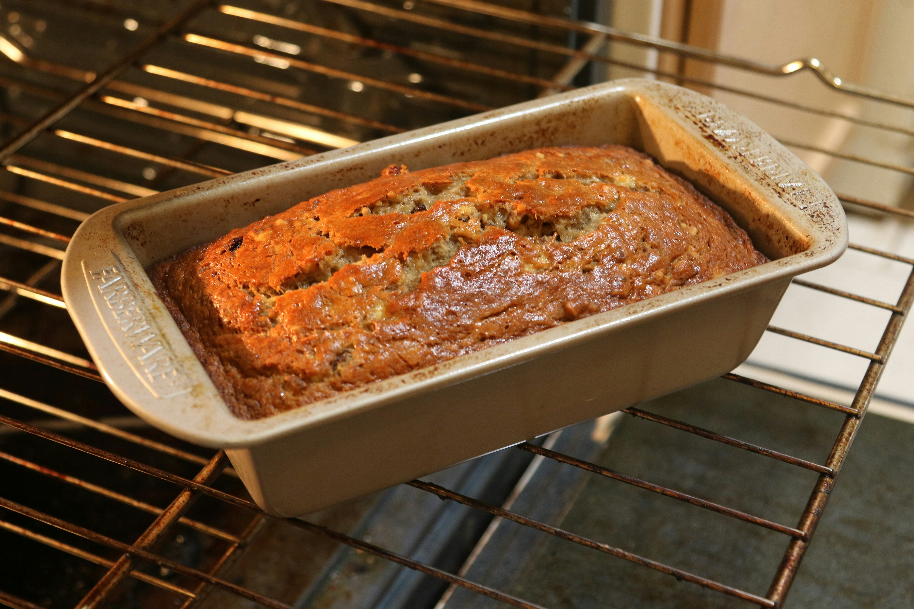

```html
Banana Bread
Home
Banana Bread

Description
Banana bread is a sweet baked food made from ripe bananas, flour, sugar, eggs and other ingredients. It is soft, moist and commonly eaten as a snack or for breakfast.
Ingredients
- 3 ripe bananas
- 2 cups of wheat flour
- 1/2 cup of sugar
- 2 eggs
- 1/2 cup of cooking oil or melted butter
- 1 teaspoon of baking powder
- 1/2 teaspoon of baking soda
- 1 teaspoon of vanilla essence (optional)
- A pinch of salt
Steps
- Preheat the oven to 180°C.
- Peel the ripe bananas and mash them in a large bowl using a fork.
- Add the sugar, eggs, cooking oil and vanilla essence to the mashed bananas.
- Mix the ingredients until they are well combined.
- In a separate bowl, combine the wheat flour, baking powder, baking soda and salt.
- Gradually add the dry ingredients to the banana mixture.
- Mix gently until all the ingredients are combined. Do not overmix.
- Grease a baking tin with cooking oil or butter.
- Pour the mixture into the prepared baking tin.
- Bake for approximately 45–60 minutes until golden brown and a toothpick inserted into the centre comes out clean.
- Remove the bread from the oven and allow it to cool.
- Slice and serve.
```